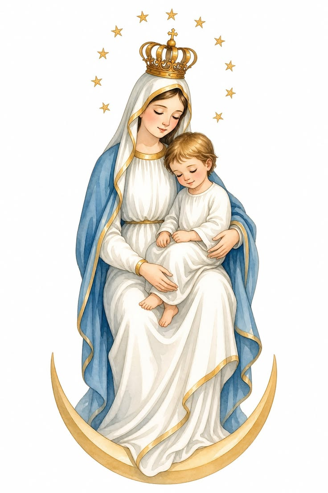
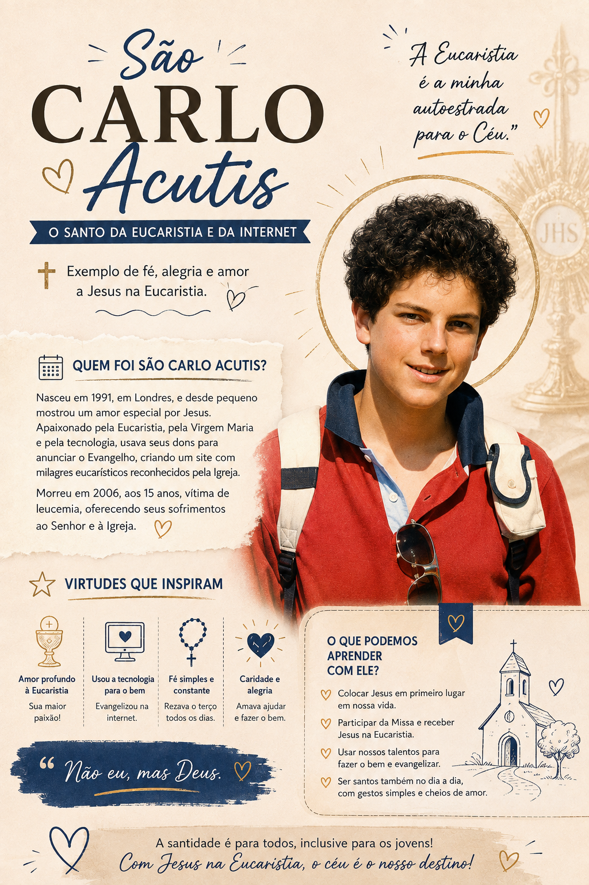

São Carlo Acutis
Por: Kettllyn
São Carlo Acutis foi um jovem que descobriu na igreja e, especialmente na Eucaristia, o verdadeiro sentido de sua vida. Sua história nos recorda que aa santidade não é algo reservado para as pessoas que vivem grande feitos: ela também pde florescer no coração dos jovens.
